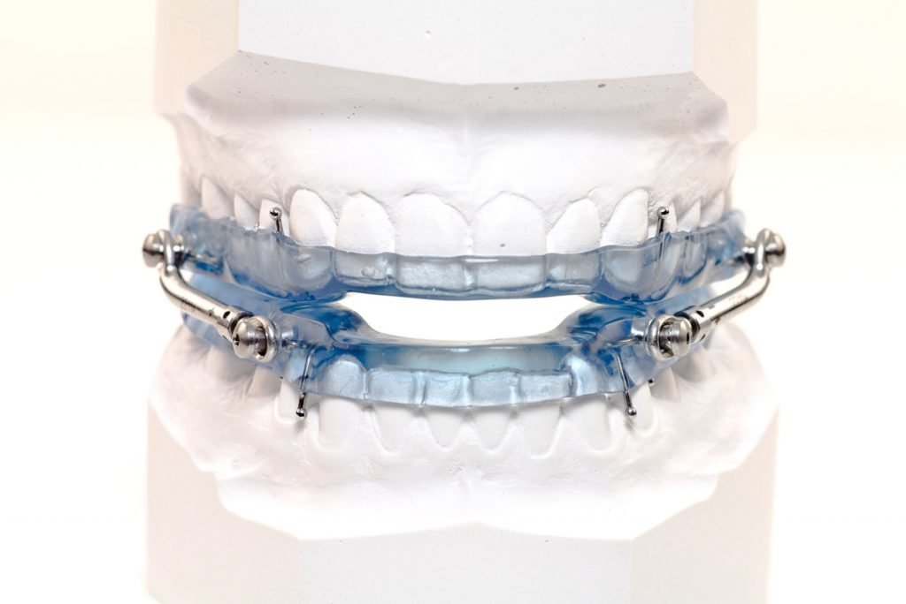
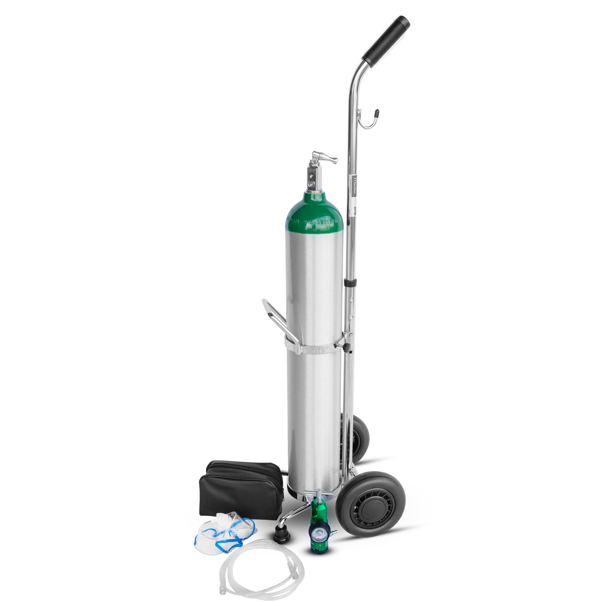

Feel Alive Again
Aeromed Medical Supply is a small privately owned company that serves the people of Davis County, UT. We provide access to and help with all of your home respiratory equipment. We have 24 hour access to on-call Respiratory Therapists to assist you with your breathing needs.
- We accept most major Insurance Carriers.
- All costs for equipment are listed when equipment is issued.
- All of our equipment is FDA approved, and maintained by certified specialists.


850 West 300 South
Wellington, UT 84555
801-555-5555
Please visit our store at:
Airtech Medical Supplies850 West 300 South
Wellington, UT 84555
801-555-5555